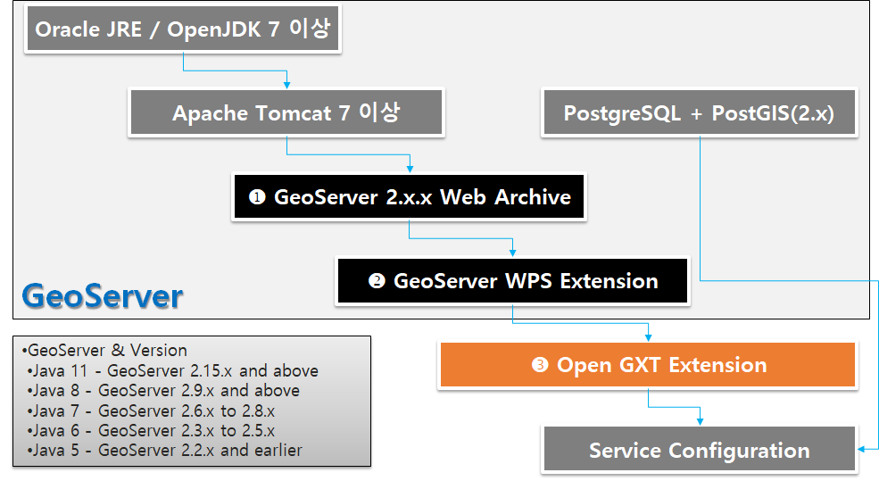
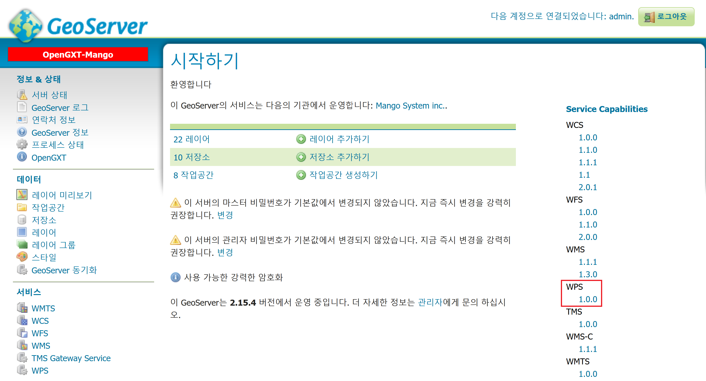
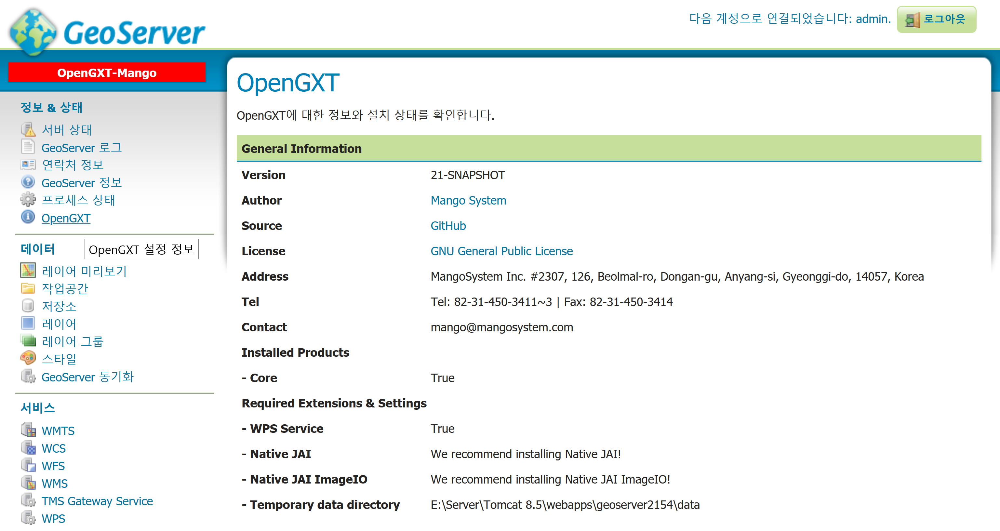

Installing on GeoServer¶
1. GeoServer and WPS Extension¶
GeoServer는 여러 방법으로 설치가 가능합니다.
여기에서는 일반적으로 가장 많이 활용되는 Apache Tomcat 환경에서 GeoServer를 설치하는 과정을 설명합니다. 기타 과정에서 대해서는 GeoServer Online 매뉴얼을 참고하시기 바랍니다.
현재 [OpenGXT for Server]는 GeoServer 2.8 이후 버전을 모두 지원합니다.
다음은 GeoServer 2.15.3 버전을 기준으로 설치 과정을 설명합니다.
1.1 Java and Tomcat
GeoServer 2.15.3은 Java 7 버전을, 2.9 버전 이후는 Java 8을 지원합니다. Java 설치 과정은 생략합니다.
Tomcat은 Java 7 또는 8 버전과 호환되는 버전을 사용하면 됩니다. Tomcat 설치 과정은 생략합니다.
Java |
GeoServer |
비고 |
Java5 |
GeoServer 2.2.x and earlier |
|
Java6 |
GeoServer 2.3.x ~ 2.5.x |
java7 호환 |
Java7 |
GeoServer 2.6.x ~ 2.8.x |
LTS 버전: 2.8.x |
Java8 & 9 |
GeoServer 2.9.x and above |
LTS 버전: 2.9.x |
Java11 |
GeoServer 2.15.x and above |
1.2 GeoServer and WPS Extension
Tomcat에서 운영되는 GeoServer를 설치하려면 Web Archive 버전(war)을 다운로드 후 Tomcat webapps 폴더에 복사만 하면 됩니다. GeoServer 설치파일을 다운로드 하려면 우선 SourceForge 연결합니다.
다음의 URL에서 GeoServer와 WPS Extension을 다운로드 합니다.
다운로드 한 geoserver-2.15.3-war.zip 파일의 압축 해제 후 geoserver.war 파일을 Tomcat 설치 폴더의 webapps 폴더에 복사합니다. 잠시 후 GeoServer가 설치됩니다.
다운로드 한 geoserver-2.15.3-wps-plugin.zip 파일의 압축 해제 후 포함된 모든 jar 파일을 webapps/geoserver/WEB-INF/lib 폴더 내에 복사합니다. 이제 Tomcat 서비스를 재 시작 후 GeoServer 관리자 페이지로 이동하면 다음과 같이 정상적으로 WPS Extension이 설치된 것을 확인할 수 있습니다.
2. OpenGXT Extension¶
GeoServer WPS Extension을 설치하면 Geometry, Vector, Raster 기본 WPS 프로세스가 제공되며, 이후 OpenGXT for Server 를 설치하면 약 200여개의 분석 프로세스가 추가됩니다. 우선 SourceForge 연결합니다.
다음의 URL에서 OpenGXT for Server 설치파일을 다운로드 합니다.
OpenGXT for Server
https://sourceforge.net/projects/mango-spatialstatistics/files/GeoServer/
GeoServer-Extension-OpenGxT-2.15.x.zip
다운로드 및 압축 해제 후 2개의 jar 파일을 webapps/geoserver/WEB-INF/lib 폴더 내에 복사합니다. 이제 Tomcat 서비스를 재 시작하면 설치가 완료됩니다.
